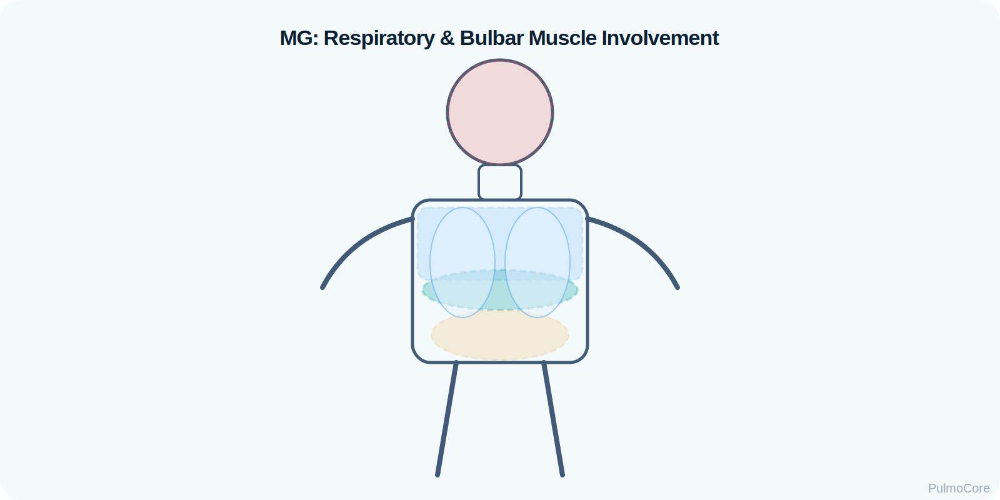

Myasthenia gravis is an autoimmune neuromuscular junction disorder that causes fluctuating skeletal muscle weakness. For respiratory therapy students, the board-prep priority is recognizing when weakness is moving beyond ptosis and fatigue into ventilatory muscle failure, ineffective cough, secretion retention, aspiration risk, or myasthenic crisis.
Category Neuromuscular Respiratory Failure
Estimated Time 30–40 minutes
Level Core RT Knowledge
Learning Objectives
By the end of this module, learners should be able to connect autoimmune neuromuscular junction dysfunction to fluctuating weakness, respiratory muscle fatigue, airway protection risk, diagnostics, monitoring, and escalation priorities.
1. Explain pathophysiology Describe how antibodies impair acetylcholine-mediated transmission and reduce skeletal muscle strength.
2. Recognize respiratory risk Identify why normal SpO₂ does not rule out impending ventilatory failure in neuromuscular disease.
3. Interpret monitoring data Use VC/FVC, NIF/MIP, ABGs, cough strength, secretion burden, and bulbar symptoms to trend severity.
4. Escalate appropriately Recognize myasthenic crisis, aspiration risk, fatigue, hypercapnia, and need for NIV or intubation.
Video Overview
2-Minute Myasthenia Gravis Overview
Watch this quick overview before moving into the disease snapshot.
Disease Snapshot
Myasthenia gravis is not primarily a lung disease. The lungs may be structurally normal, but the patient may lose the muscle strength needed to ventilate, cough, swallow, and protect the airway. Symptoms often worsen with exertion or repeated use and improve with rest.
What it is: Autoimmune neuromuscular junction disease.
Primary problem: Weak signal transmission from nerve to skeletal muscle.
Do not wait for SpO₂ to fall before taking MG seriously. Oxygenation may look acceptable while ventilation is failing. The RT must trend muscle strength, cough effectiveness, work of breathing, CO₂ retention, and ability to handle secretions.
Board Prep Frame
Immediately associate MG with fluctuating weakness, ptosis/diplopia, bulbar symptoms, weak cough, low VC/FVC, worsening NIF/MIP, hypercapnia as a late sign, and myasthenic crisis requiring airway/ventilatory support.
Quick Pre-Check
Start with the core MG pattern
Which statement best describes the respiratory problem in myasthenia gravis?
Anatomy & Pathophysiology
In MG, antibodies impair communication at the neuromuscular junction. The motor nerve releases acetylcholine, but the postsynaptic muscle membrane has fewer functional receptors or impaired receptor signaling. With repeated muscle use, transmission becomes less reliable, so weakness worsens.
Patient may decline during assessment, meals, or prolonged distress.
Bulbar weakness
Swallow, voice, cough, and airway protection weaken.
Aspiration and secretion retention risk increases.
Ventilatory muscle weakness
Diaphragm/intercostal strength falls.
Hypoventilation and rising PaCO₂ may occur.
Preserved lung parenchyma
Airways/alveoli may be normal.
SpO₂ can be misleadingly normal until late.
Danger Sign
A patient with MG who becomes quieter, cannot count or speak in full phrases, has a weak cough, pools secretions, or shows rising PaCO₂ may be entering myasthenic crisis.
Click the MG Hotspots
Click each hotspot to reveal how neuromuscular weakness becomes an RT problem.

Start here: Click all four hotspots to complete this activity.
0 / 4 hotspots reviewed
Etiology, Exacerbation Triggers & Risk Factors
MG exacerbations may follow infection, surgery, pregnancy/postpartum changes, medication effects, missed therapy, heat, stress, or disease progression. Certain medications can worsen neuromuscular transmission and should prompt medication review.
Trigger/Risk
Why It Matters
RT Teaching Focus
Respiratory infection
Raises ventilatory demand while muscle reserve is low.
Watch cough effectiveness and secretion burden.
Missed MG medication
Can worsen weakness.
Clarify timing of pyridostigmine and symptom pattern.
Bulbar symptoms
Threaten airway protection.
Escalate aspiration precautions and suction readiness.
Heat/exertion
Can worsen fatigue.
Schedule care to avoid exhausting the patient.
Medication effects
Some drugs can worsen MG.
Communicate concern to provider/pharmacy.
Sort the MG Findings
Choose the best category for each item, then check your answers.
Respiratory infection
Serial vital capacity
Pooling secretions with weak cough
Negative inspiratory force
Rising PaCO₂ with fatigue
Complete the sorting activity to continue.
Clinical Manifestations
MG findings are often fluctuating and fatigable. Respiratory presentations may begin subtly: weak voice, short phrases, poor cough, difficulty clearing secretions, dysphagia, orthopnea, or tachypnea with shallow breathing.
Finding Type
What the RT May See
Ocular
Ptosis and diplopia, often worse later in the day.
Rising PaCO₂ and falling pH indicate ventilatory failure.
Response clues
Declining strength despite rest or therapy suggests need for escalation.
Important Teaching Point
In MG, the patient can look less dramatic than an asthma or COPD patient until late. A normal SpO₂ does not equal safe ventilation.
Sort the MG Clinical Signs
Categorize each finding as an MG Baseline Sign, Ventilatory Warning, or Crisis Sign, then check your answers.
Fluctuating ptosis and diplopia worse later in the day
Weak cough with difficulty clearing secretions
Dysphagia with pooling secretions and aspiration risk
Shallow tachypneic breathing with declining vital capacity
Rising PaCO₂ with exhaustion despite oxygen therapy
Complete the sorting activity to continue.
Diagnostics & Assessment
Diagnostic testing confirms MG, while bedside respiratory monitoring determines immediate safety. RTs focus on the trend: Is muscle strength improving, stable, or failing?
Disease Confirmation
Test
MG Pattern
AChR antibodies
Support autoimmune MG when positive.
MuSK antibodies
May be present in some antibody-positive MG variants.
Severity is judged by muscle reserve and airway safety, not wheeze. Serial VC/FVC, NIF/MIP, cough strength, secretion handling, speech, swallow, and CO₂ trend help identify deterioration.
A patient with known MG has worsening dysphagia, shallow breathing, weak cough, and serial vital capacity is falling. What is the best interpretation?
Severity & Red Flags
The key question is whether the patient can keep ventilating and protect the airway as weakness progresses.
Red Flag
Why It Matters
Falling VC/FVC or worsening NIF
Declining respiratory muscle reserve.
Rising PaCO₂, falling pH, or increasing somnolence
Ventilatory failure.
Weak cough or inability to clear secretions
Airway clearance and aspiration risk.
Dysphagia, drooling, choking, nasal speech
Bulbar weakness and airway protection failure.
Rapid shallow breathing or orthopnea
Respiratory muscle fatigue.
Poor response or worsening despite therapy
Need urgent escalation and ICU-level monitoring.
Management & Treatment
MG management includes disease-directed therapy plus immediate respiratory support when ventilatory reserve or airway protection declines. RT priorities include objective monitoring, airway clearance support, aspiration precautions, oxygen as needed, and ventilatory support when indicated.
Treatment Concepts
Therapy
Purpose
RT Relevance
Pyridostigmine
Improves neuromuscular transmission.
Timing can affect strength; excess may increase secretions.
Corticosteroids/immunosuppression
Reduces autoimmune activity.
Not immediate airway rescue; monitor infection risk.
IVIG
Immunomodulation for significant exacerbation/crisis.
Works alongside respiratory monitoring/support.
Plasma exchange
Removes circulating antibodies.
Used in severe cases; airway support remains priority.
NIV
Supports ventilation without intubation.
Only appropriate when airway protection and secretions are manageable.
Intubation/mechanical ventilation
Protects airway and supports ventilation.
Needed with bulbar failure, worsening CO₂, exhaustion, or unsafe airway.
Respiratory therapists manage myasthenic crisis by assessing respiratory muscle strength
and airway protection, identifying impending ventilatory failure,
supporting secretion clearance and ventilation, reassessing progression closely,
and escalating airway management before respiratory collapse develops.
Board Prep Connection
NBRC-style neuromuscular questions commonly test whether the RT recognizes
worsening respiratory muscle weakness, impaired airway protection,
aspiration risk, rising CO₂, and the need for timely ventilatory escalation.
Myasthenic Crisis Escalation Sequence
Select the steps in the best general order when an MG patient shows worsening respiratory weakness.
Assess airway protection, secretion burden, and respiratory effort
Identify worsening respiratory weakness, weak cough, or rising CO₂
Measure respiratory mechanics and monitor oxygenation and ventilation
Support secretion clearance and aspiration precautions
Reassess airway protection, respiratory mechanics, and fatigue progression
Escalate to ventilatory support or intubation if respiratory failure worsens
Complete the sequence activity to continue.
Myasthenic Crisis & Ventilator Considerations
Myasthenic crisis is severe MG weakness causing respiratory failure or inability to protect the airway. It is a ventilation and airway-protection emergency, not just a low-oxygen problem.
Vent goal: Support ventilation and airway protection while disease therapy takes effect.
NIV caution: Avoid NIV when secretions, aspiration, altered mentation, or bulbar failure make the airway unsafe.
Board Pearl
In MG crisis, oxygen can correct hypoxemia but does not fix hypoventilation. The decisive issue is whether the patient can ventilate and protect the airway.
Respiratory Therapist Role
The RT is central to early recognition of neuromuscular respiratory failure. Assessment should include work of breathing, speech, cough, secretion handling, swallow/aspiration clues, VC/FVC, NIF/MIP, SpO₂, ABG or CO₂ trend, and readiness for ventilatory support.
This guided case reveals one clinical stage at a time. Learners make an RT decision, receive feedback, and then continue to the next stage.
Stage 1: Initial Presentation
A 42-year-old with known MG reports worsening fatigue after a respiratory infection. They have ptosis, nasal speech, and shortness of breath when lying flat.
RR 26/min shallow
SpO₂ 96% on room air
Cough Weak
Decision Question: What is the priority RT assessment?
Stage 2: Objective Decline
Serial measurements show decreasing vital capacity and a less negative NIF. The patient now struggles to count aloud and has trouble swallowing water.
Decision Question: What does this suggest?
Stage 3: Ventilatory Failure Emerging
ABG now shows increasing PaCO₂ with mild acidemia. The patient is more fatigued and cannot clear secretions well.
Decision Question: Which interpretation is best?
Stage 4: Support Decision
The patient has pooling secretions, weak cough, dysphagia, and worsening PaCO₂. The team asks whether NIV is appropriate.
Decision Question: Which response is safest?
Case Wrap-Up
RT Takeaway: In MG, respiratory failure is a muscle-strength problem. Trend VC/FVC, NIF, cough, speech, secretion handling, and CO₂ — not SpO₂ alone.
If the patient worsens: bulbar weakness, secretion pooling, rising PaCO₂, exhaustion, and falling VC/NIF require urgent escalation.
Knowledge Check
Board-Style Practice
Answer each question to complete this activity. Answer choices shuffle each time the lesson opens.
Question 1
A patient with MG has worsening ptosis, dysphagia, weak cough, and falling VC. What is the priority concern?
Question 2
Which bedside trend is most useful for monitoring respiratory muscle reserve in MG?
Question 3
Why can SpO₂ be misleading in early myasthenic respiratory failure?
Question 4
An MG patient has dysphagia, drooling, weak cough, and rising PaCO₂. What is the safest escalation concept?
0 / 4 questions answered
FAQ
Common Myasthenia Gravis Questions
What is the simplest way to understand MG?
MG is a neuromuscular junction disorder where the nerve signal does not reliably activate skeletal muscle, causing fluctuating weakness.
Why is MG important for RTs?
Because respiratory muscles, cough, swallow, and airway protection can fail even when the lungs themselves are not the primary problem.
Why is normal SpO₂ not enough?
SpO₂ reflects oxygen saturation, not muscle strength or CO₂ clearance. A patient may retain CO₂ while SpO₂ remains acceptable.
What is myasthenic crisis?
It is severe MG weakness causing respiratory failure or inability to protect the airway, often requiring ICU-level support.
When is NIV risky?
NIV is risky when the patient has bulbar weakness, altered mental status, vomiting, heavy secretions, aspiration risk, or inability to protect the airway.
What bedside measurements matter most?
Serial VC/FVC, NIF/MIP, cough strength, secretion burden, speech/swallow ability, work of breathing, and PaCO₂ trend.
How is cholinergic crisis different?
Cholinergic crisis results from excess acetylcholinesterase inhibitor effect and may include increased secretions, salivation, diarrhea, bradycardia, and weakness.
Summary & Clinical Pearls
Myasthenia gravis is an autoimmune neuromuscular junction disorder that causes fluctuating skeletal muscle weakness. The RT priority is recognizing when weakness threatens ventilation, cough, secretion clearance, swallow, and airway protection.
Must know: MG is a neuromuscular weakness disorder, not a primary obstructive lung disease.
Board pearl: Trend VC/FVC and NIF/MIP; worsening values signal declining respiratory reserve.
RT pearl: Assess cough, voice, swallow, secretions, work of breathing, and CO₂ trend.
Common mistake: Do not let a normal SpO₂ falsely reassure you when ventilation or airway protection is worsening.
Searchable Glossary
Search key neuromuscular and respiratory monitoring terms before practicing with the flashcard mastery deck.
Glossary Flashcard Mastery Deck
Click the card to flip it. Use Term → Definition or Definition → Term mode. Mark known cards to move them into the completed pile.